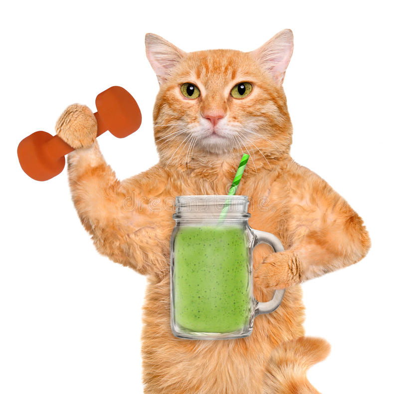

The Pre Workout Smoothie

Description
This guide will teach you to make the best Pre Workout Smoothie to Pump Out You and Your Cat's brain.
List of Ingredients
- Pre Workout Powder:Any choice of pre workout powder.(Chads only drink Gorilla Mind.)
- Banana:One banana of choice.
- Ice Cube:Half glass of Ice Cube from the 90's.
- Almond Milk:One glass of Almond Milk.
Steps to make Pre Workout Smoothie
- Place 1 tbsp of Pre Workout Powder into Blender.
- Pour in Almond Milk.
- Place the half glass of Ice Cubes.
- Lastly Place in the Banana.
- Blend the formulated Pre Workout Drink till failure.
- Serve inside your shaker bottle.